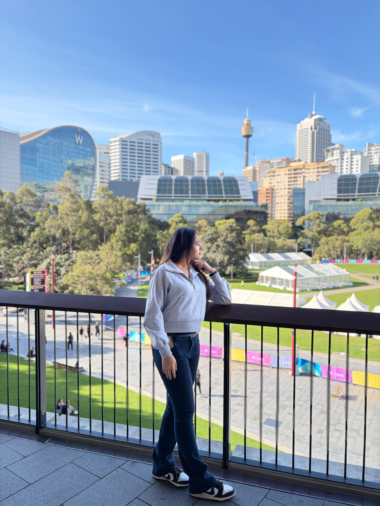

Meghna Group2 years 4 months
Architect
Planning and execution across residential, vacation-house and industrial projects; project coordination with architects and consultants.
Architecture · Interiors · Exteriors · Design
Architect & Designer
Creating thoughtful spaces through architectural design, considered details and a close connection to people and place.
Sydney, Australia · Rooted in Dhaka, Bangladesh

01 / The person behind the plans
I’m Liza Suraia, professionally known as Suraia Akter. My work connects architectural thinking with the practical care it takes to bring a project to life.
With a Bachelor of Architecture from North South University and a construction management background at CQUniversity in Sydney, I bring together design, documentation and project coordination.
My experience spans residential buildings, interiors and shared spaces in Bangladesh. I value collaboration, thoughtful problem-solving and a lasting relationship between architecture and its surroundings.
02 / Experience & approach
From early sketches and coordinated drawings
to the details that make a building work.
Areas of practice
Planning and execution across residential, vacation-house and industrial projects; project coordination with architects and consultants.
Multi-storey residential projects, with project coordination, architectural design development and detailed drawing work.
Residential and religious architecture, design documentation, construction details and construction administration.
School-building design following RAJUK requirements and graphical presentations for building projects.
03 / Skills & tools
Design thinking, technical documentation
and visual communication.
The tools behind the work
Apartment and housing design, interior design, design development and freehand sketching.
Working drawings, construction details and computer-aided drafting in 2D and 3D.
3D modelling, rendering, materials and lighting, graphic presentation and digital photography.
04 / Education
Architectural education complemented
by construction management.
CQUniversity · Sydney, Australia
North South University · Dhaka, Bangladesh
05 / A selection of work
From private homes to shared spaces.
A collection of professional and academic projects.
Showing 6 of 11 projects
06 / Start a conversation
Sydney, Australia
Architecture · Design · Collaboration